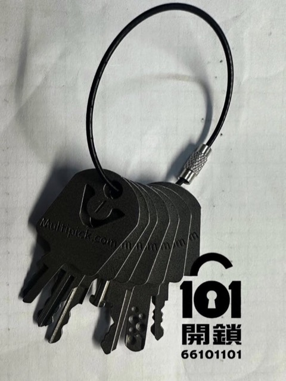
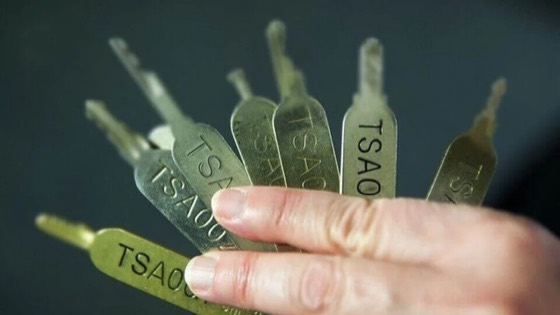

先发照片
发送行李箱锁位、品牌或型号、卡住位置，可加快判断。
香港行李箱开锁服务指南
人在香港遇到行李箱钥匙不见、TSA锁打不开、忘记行李箱密码，先不要自行撬锁或剪拉链。101开锁可先通过 WhatsApp 查看锁位照片、所在地及授权资料，再评估是否能协助开锁。

101开锁可先作初步评估：如果你人在香港，行李箱钥匙不见、TSA海关锁打不开、行李箱密码忘记，请先 WhatsApp 发送行李外观、锁位近照、所在地及问题描述。我们会先核实行李拥有权，再按锁具类型判断是否能协助开锁。
发送行李箱锁位、品牌或型号、卡住位置，可加快判断。
酒店、家中、办公室、机场附近或港九新界地区，可先提供位置。
行李箱开锁前锁匠会要求客人提供合理证明，避免未授权开锁风险。
钥匙不见、后备钥匙留在海外或钥匙断在锁内，可以先发锁位照片确认是否适合由锁匠处理。
TSA007、TSA008 或其他 TSA lock 卡住、密码正确但不能开，可先查询，不建议自行硬撬。
如三位或四位密码锁忘记密码，先不要乱试到锁扣变形；提供照片后再判断可行处理方法。
无论你在酒店、住宅、办公室、商场或准备出发前才发现行李锁打不开，先提供所在地，可帮助我们判断能否安排及预估处理时间。
旅客在酒店房、服务式住宅或家中发现钥匙遗失，可先发送锁位照片及地址区域。
出差、展览或活动前遇到行李锁问题，可说明是否急用证件、衣物或工作用品。
如接近航班时间，请直接致电并提供位置；是否能赶及处理，需按距离、锁具及现场情况判断。
2015年公开报道提及TSA行李锁通匙图像外泄，其后网上出现复制模型及销售讨论。这能说明TSA锁有安全限制，但不代表应自行尝试开锁。
网上有不少关于TSA key、TSA锁破解或行李箱密码锁开法的内容，但自行撬锁、剪扣或硬拉拉链，可能令箱体变形，也可能损坏里面物品。若目标是尽量保留行李箱，较稳妥做法是先找品牌售后或锁匠评估。

| 情境 | 较合适做法 | 原因 |
|---|---|---|
| 前往或途经美国 | 考虑使用TSA认证密码锁或行李箱内置TSA锁 | 降低安检时锁具或行李箱被强行破坏的机会。 |
| 一般短途旅行 | 使用品质可靠、容易辨识是否被打开的行李锁 | 主要功能是避免误开、拉链松开及降低低门槛盗取风险。 |
| 证件、现金、珠宝、电脑 | 随身携带，不放入托运行李 | 行李锁不等于保险箱，高价值物品应由自己看管。 |
| 行李箱钥匙遗失或忘记密码 | 先找品牌售后；急用时找能核实拥有权的锁匠协助 | 避免自行破坏拉链、锁扣、箱壳，也避免未授权开锁风险。 |
手机可向左／右滑动查看完整比较表。
新行李箱或保养期内产品，先查看品牌说明、保养卡或官方售后安排，避免不必要破坏。
行李箱拉链、锁扣及箱壳一旦变形，后续维修成本可能高于处理锁具本身。
如需101开锁协助，请准备行李拥有权证明、位置及锁具照片；我们会按情况判断是否能处理。
先WhatsApp发送行李箱外观、锁位及所在地；我们会按个案核实及初步回复可行处理方向。
清晰度、角度、比例参照物、钥匙齿完整度及钥匙类型，都会影响能否从照片推算可用资料。
不能用TSA通匙设计直接推论所有住宅门锁同样脆弱；锁芯等级、钥匙胚限制及安装方式都不同。
不要公开展示钥匙齿，不把钥匙与住址信息同时曝光；若怀疑钥匙曾外流，再由锁匠按锁芯评估是否需要换锁芯。
以下都是较接近即时服务的查询，不只是旅游知识。描述越清楚，我们越容易判断是否能协助。
可以先通过WhatsApp发送行李箱外观、锁位近照、所在地及问题描述。我们会先核实行李拥有权，再按锁具类型评估是否能协助开锁。
先不要自行撬锁、剪拉链或硬拉锁扣，以免损坏箱体。可先确认品牌售后安排；如在香港需要急用行李，可联系101开锁作初步评估。
不一定。是否需要剪锁或更换零件，要看行李箱品牌、锁具类型、锁扣状态及是否有其他损坏。建议先发照片，不要自行破坏。
港岛、九龙、新界、酒店、住宅、办公室、商场或机场附近都可以先查询。能否安排及时间，需按所在地、交通、锁具和师傅情况确认。
很多三位密码TSA lock没有附旅客使用的钥匙；锁孔是供授权安检人员使用。旅客应按品牌说明设置及使用密码。
TSA锁是带有Travel Sentry或相关认证标记的行李锁。它的主要用途是让授权安检人员在需要检查托运行李时开启及重新锁上，减少破坏锁或行李箱的机会。
行李锁即时查询
先发送锁位照片、问题描述及所在地；如属家居钥匙照片外泄或钥匙曾被借出，我们也可按锁芯类型评估是否需要更换锁芯。